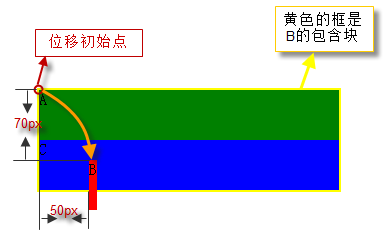
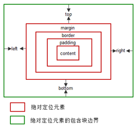
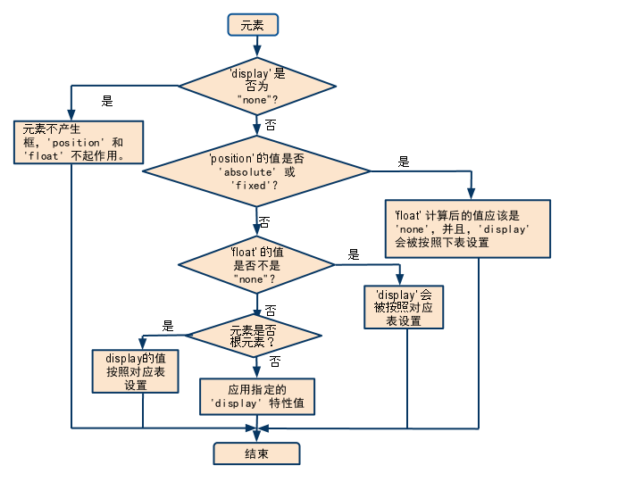
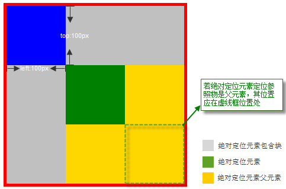
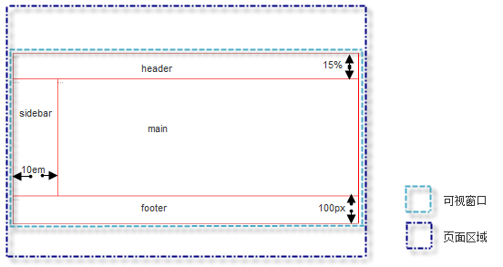
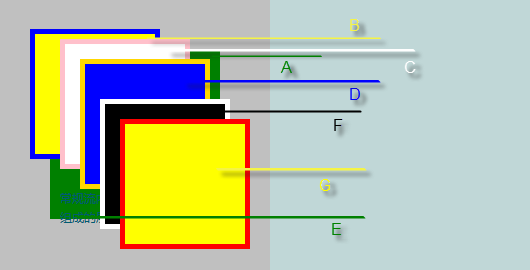

三种定位体系简介
框( box )布局影响因素之一，便是定位体系。定位体系也是其最为重要的影响因素。
CSS2.1 中，一个框可以根据三种定位体系布局。CSS2.1 中的定位体系使文档布局更容易实现，而并不需要使用标记的手段（如，不可见的图片）达到布局的效果。
常规流( Normal flow )
常规流，是对 "normal flow" 的直译。
之所以称之为常规流，是因为这是相对于浮动和绝对定位的一个说法，浮动和绝对定位元素都脱离了当前的常规流。常规流中，浏览器在解析html元素的时候是一个流式的过程，从html起始标签开始到html结束标签截止。
在 CSS2.1中，常规流包括块框( block boxes )的块格式化( block formatting )， 行内框( inline boxes )的行内格式化( inline formatting )，块框或行内框的相对定位，以及插入框的定位。
浮动( Floats )
浮动，顾名思义，相对于常规流来讲，它漂浮在常规流的上方。
在浮动模型中，一个框( box )首先根据常规流布局，再将它从流中取出并尽可能地向左或向右偏移。内容可以沿浮动区的侧面排列。 因为它首先要根据常规布局后才偏移，所以效率较常规流低。
用 'float' 特性声明浮动，特性值可以是："none"、"left"、"right"。
绝对定位( Absolute positioning )
在绝对定位模型中，一个框整个地从常规流中脱离（它对后续的兄弟元素没有影响），并根据它的包含块来分配其位置。
选择定位方案：'position' 特性
'float' 和 'position' 特性决定了使用哪种 CSS2.1 定位算法来计算框的位置。
'position' 特性介绍表：
| 值 | static | relative | absolute | fixed | inherit |
| 初始值 | static |
| 适用于 | 所有元素 |
| 可否继承 | 否 |
| 百分比值 | N/A |
| 计算值 | 同设定值 |
特性值的含义
static
该框是一个常规框，布局根据常规流。'left' 、'right'、'bottom' 和 'top' 属性不适用。
relative
框的位置根据常规流计算（被称为常规流中的位置）。然后框相对于它的常规位置而偏移。如果框 B 是相对定位的，其后框的定位计算并不考虑 B 的偏移。 table-row-group, table-header-group, table-footer-group, table-row, table-column-group, table-column, table-cell, 和 table-caption 元素的 'position:relative' 效果没有被定义。 看下面例子：
ABC
根据标准，B 的位置应该相比自身原位置偏移，而 C 在放置的时候，会认为 B 仍然在原位置。

注意，相对定位的元素处于常规流中，没有脱离常规流。
absolute
框的位置（可能还有它的尺寸）是由'left'，'right'，'top'和'bottom'特性决定。这些特性指定了框相对于它包含块的偏移量。 绝对定位的框从常规流向中脱离。这意味着它们对其后的兄弟元素的定位没有影响。另外，尽管绝对定位框有外边距(margin)， 它们不会和其它任何外边距发生折叠（Collapsing margins）。看下面例子：
ABC
示意图：
从上例中可以看出，B完全脱离了文档流，并相对于他的包含块发生了偏移。由于B脱离了文档流，所以C基于常规流紧挨着A定位。
这里需要注意的是：B定位的边界是其外边距的边界，即偏移量的计算是从margin的外边距来计算的。另外，B的宽度变窄了，这是由于B绝对定位后，宽度会尽可能的窄（也就是说宽度是由其内容决定的）。
fixed
fixed定位的框位置计算是根据 'absolute' 模型，不过框要额外地根据一些参考而固定。跟绝对定位一样，固定定位元素的外边距不会和任何其他外边距发生折叠。 应用于手持终端、投影设备、屏幕、TTY、电视媒体类型时，框相对于可视窗口固定，滚动时不移动。应用于打印媒介类型时，框被渲染于每一页， 并相对于页框固定，就好象是通过可视窗口查看该页一样（例如，打印预览）。对于其他的媒介类型，表现没有被定义。
对根元素的 'position'，用户端(UA)可以视为 "static"。
框偏移: 'top'，'right'，'bottom'，'left'
如果一个元素的 'position' 特性值不是 "static"，该元素被称为定位元素。定位的元素生成定位框，其定位基于四个特性：'top'，'right'，'bottom'，'left'。
| 值 | 这四个特性的值1可以是： <length> | <percentage> | auto | inherit 之一
|
| 初始值 | auto |
| 适用于 | 定位的元素，即 'position' 特性的值为非 "static" 的元素。 |
| 可否继承 | 否 |
| 百分比值 | 百分比值基于包含块的高度(top, bottom)或者宽度(left, right) |
| 计算值 | 对于 "position:relative" 参见相对定位；对于 "position:static" 取值 "auto"； 其他情况，如果值为长度，取相应的绝对长度，如果标值为百分比，取指定的值，否则，取 "auto"。 |
| 定位作用的具体位置 | 对于绝对定位元素( absolutely positioned )的框，这四个特性的值表示，元素的外边界( margin 边界)相对于 包含块 的边界的位移。 而对于相对定位元素( relatively positioned )的框，偏移量相对于它自己的相应的边界。比如，top 是相对于它的顶边界，right 相对于右边界。 |
'display'、'position' 和 'float' 的相互关系
先看一下流程图

关于这三者的关系，总的来说可以把它看作是一个类似优先级的机制， "position:absolute" 和 "position:fixed" 优先级最高，有它存在的时候，浮动不起作用，'display' 的值也需要调整； 其次，元素的 'float' 特性的值不是 "none" 的时候或者它是根元素的时候，调整 'display' 的值； 最后，非根元素，并且非浮动元素，并且非绝对定位的元素，'display' 特性值同设置值。
display调整对应规则
| 设定值 | 调整值 |
|---|---|
| inline-table | table |
| inline, run-in, table-row-group, table-column, table-column-group, table-header-group, table-footer-group, table-row, table-cell, table-caption, inline-block |
block |
| 其他 | 同设定值 |
这从另一个侧面说明了一个问题：浮动或绝对定位的元素，只能是块元素或表格。
'display' 的值为 'none'
如果 'display' 的值为 'none'，那么 'position' 和 'float' 不起作用。在这种情况下，元素不产生框。因此浮动和定位无效。
'position' 的值是 'absolute' 或 'fixed'
如果 'position' 的值是 'absolute' 或 'fixed'，框就是绝对定位，'float' 计算后的值应该是 'none'，并且，'display' 会被按照上表设置。 框的位置将由 'top'，'right'，'bottom' 和 'left' 属性和该框的包含块确定。
也就是说，当元素是绝对定位时，浮动失效，'display' 会被按规则重置。请看下面的例子：
<script type="text/javascript">
function getStyle(obj, style) {
var _style = (style == "float") ? "styleFloat" : style;
return document.defaultView ? document.defaultView.getComputedStyle(obj, null).getPropertyValue(style) : obj.currentStyle[_style.replace(/-[a-z]/g, function() {
return arguments[0].charAt(1).toUpperCase();
})];
}
$(function(){
var position1 = $('#position1')[0];
$('#position2').html('float : ' + getStyle(position1,'float') + '<br/>display : ' + getStyle(position1, 'display' ));
});
</script>
<div id="position1" style="position:absolute; float:left; display:inline;"></div>
<div id="position2" style="padding: 10px;border:1px solid #0066cc;width:300px;"></div>
上面例子中有一个既是绝对定位又是浮动的元素，我们计算显示float' 值和 'display' 值。在IE 中，'float' 值和 'display' 的特性值是 "float: none; display: inline"。其他浏览器中计算后的结果是："float: none; display: block"。
'float' 的值不是 "none"
如果 'float' 的值不是 "none"，该框浮动并且 'display' 会被按照转换对应表设置。请看下面的例子：
$(function() {
var position1 = $('#position3')[0];
$('#position4').html('display : ' + getStyle(position1, 'display'));
});
<div> <span id="position5">float span</span>
<div id="position6"></div>
</div>
按照规则，SPAN 是行内元素，因此不能够设置其宽度和高度。但是浮动后，'display' 值按照转换对应表设置后，成为块级元素。 在IE下打印display的值是inline，不过实际布局是按照块级元素来处理的。
元素是根元素
如果元素是根元素，'display' 的值按照转换对应表设置。
其他情况按照指定的 'display' 特性值处理
绝对定位( Absolute positioning )
参照元素
绝对定位（Absolute positioning）元素定位的参照物是其包含块，既相对于其包含块进行定位，不一定是其父元素。看下面的例子：
position: staticposition : absolute
示意图
绝对定位元素完全脱离了常规流
绝对定位元素完全脱离了常规流（对后继的兄弟节点没有影响）。
常规流中的框，都在同一个层上，浮动框是处于常规流之上的一个特殊层，它可能会对常规流中的框的定位产生影响。但绝对定位的框不会， 每个绝对定位的框都可以看做一个单独的图层，不会对其他层框的定位产生影响。这与层叠级别和层叠上下文有关。
有一点需要注意，那就是绝对元素定位的 top 和 left 值跟绝对元素未脱离常规流之前在常规流中位置有关。
例子：
absoluteDIV 中的普通文本元素absolute
两个绝对定位框中间的 DIV 在常规流中，影响了后面的绝对定位元素的位置，但没有受到其前面的绝对定位框的影响。
绝对定位框生成的包含块
一个绝对定位框会为它的常规流子元素和定位子元素(不包含 fiexed 定位的元素)生成一个新的包含块。 不过，绝对定位元素的内容不会在其它框的周围排列。
层叠级别
绝对定位框可能会掩盖另一个框的内容，或者被另外一个框掩盖，这取决于互相重合的框的层叠级别（z-index）。
固定定位( Fixed positioning )
固定定位是绝对定位的一个子类。唯一的区别是，对于固定定位框，它的包含块由可视窗口( viewport )创建。对于连续媒介，固定定位框并不随着文档的滚动而移动。从这个意义上说，它们类似于固定的背景图形。对于页面媒介，固定定位框在每页里重复。对于需要在每一页底部放置一个签名时，这个方法非常有用。 注意，IE6 中不支持固定定位( Fixed positioning )定位，通常的做法是使用绝对定位代替，并使用 Javascript 脚本控制绝对定位框的位置，随页面滚动而相应的变化。 以下示例代码是修改自 W3C 官方使用固定定位布局的一个例子：
<!DOCTYPE HTML>
<html>
<head>
<meta http-equiv="Content-Type" content="text/html; charset=utf-8" />
<title>A frame document with CSS2.1</title>
<style type="text/css">
body {
height: 8.5in;
}
div {
border: 1px solid red;
}
#footer {
position: fixed;
width: 100%;
height: 100px;
top: auto;
right: 0;
bottom: 0;
left: 0;
}
#header {
position: fixed;
width: 100%;
height: 15%;
top: 0;
right: 0;
bottom: auto;
left: 0;
}
#main {
position: fixed;
width: auto;
height: auto;
top: 15%;
right: 0;
bottom: 100px;
left: 10em;
}
#sidebar {
position: fixed;
width: 10em;
height: auto;
top: 15%;
right: auto;
bottom: 100px;
left: 0;
}
</style>
</head>
<body>
<div id="header"> ...</div>
<div id="sidebar"> ...</div>
<div id="main"> ...</div>
<div id="footer"> ...</div>
</body>
</html>
示意图
无论如何滚动页面，布局区域始终位于可视窗口中。
层叠级别( Stack level )
层叠级别( Stack level )概述
为了说明方便，我们把浏览器的可视窗口看作二维的坐标系，以左上角为原点。 假设两个元素分别形成了 "100px×100px" 的框，把 A 的左上角放到坐标为(100, 200)的地方，B 的左上角也放到坐标值是 (100, 200)的地方。 那么 A 和 B 哪个显示在前面，能被用户看到呢？
以上的问题就涉及到可视化格式模型的 3D 模型了。需要确定 A 和 B 在 Z 轴上的位置，也就是确定它们所处的层哪个显示层级更靠上。
对于 A 和 B 在 Z 轴方向上所属的层的级别，或者叫层级，类似 Photoshop 中的图层顺序。CSS 中将他规范命名为：层叠级别(Stack level)。
指定层叠级别：'z-index' 特性
| 值： | auto | <integer> | inherit |
| 初始值： | auto |
| 适用于 | 定位元素 |
| 可否继承 | 否 |
| 计算值 | 同设定值 |
'z-index' 特性值的意义
该值可以设为integer或auto，默认值为auto。 整数值是生成框在当前层叠上下文中的层叠级别。同时，该框也会生成一个局部层叠上下文，在其中它的层叠级别是 '0'。 设为auto时生成框在当前层叠上下文中的层叠级别和它的父框相同。该框不生成新的局部层叠上下文。
'z-index' 作用
对于一个定位框，'z-index' 特属性指定了：
- 框在当前层叠上下文中的层叠级别。
- 框是否生成局部层叠上下文。
层叠规则
层叠规则，就是解决框在 Z 轴方向上谁前谁后的问题。大致来讲，就是层叠级别高的遮住层叠级别低的。
看下面例子：
ACDB
从上例中可以看出， A 遮住了 B，C 遮住了 D 和 A。
A 、B、 C、D 都是定位元素。其中，A 的 'z-index' 是 "1"，所以，A 会创建一个局部的层叠上下文， 因此， C 、D 就处于 A 创建的局部层叠上下文中。同时，A 和 B 处于同一个层叠上下文中，A 的层叠级别是 1， B 的层叠上下文同其父框的层叠上下文。D 在 A 形成的层叠上下文中，层叠级别同 A，是 "0"。所以，从后到前的顺序应该是： B -> A -> D -> C。
层叠上下文( Stacking context )
在本文中，"在……前面" 指的是当用户面向可视窗口的时候离用户更近。
CSS 中的层叠关系虽然与 Photoshop 的图层结构类似，但又有不同。层叠关系的结构比图层更加复杂，更加立体。
层叠的结构，涉及层叠上下文，层叠上下文是一个抽象的容器，它可以包含层，也可以包含其子元素创建的层叠上下文。
在层叠上下文内部，各层按照规则在 Z 轴方向上从后向前排列。
从一个父层叠上下文的角度来看，层叠上下文本身是其中一个不可分割的最小单位；其他层叠上下文中的框，不可能出现在它里面的框的中间位置。 也就是说，层叠上下文本身被看作一个单独的层处理，它在 Z 轴上的顺序与其子层无关。比如，在上面例子中，A 和 B 处于全局的层叠上下文中， A 和 B 就是那个层叠上下文中的最小单位；同时，C、D 处于同一个层叠上下文中，B 中的框不可能在 Z 轴上处于 C 和 D 之间。
在文档中，每个元素属于一个层叠上下文。在给定的层叠上下文中，每个元素都有一个整型的层叠级别，它描述了在相同层叠上下文中元素在“Z轴”上的显示顺序。
同一个层叠上下文中，层叠级别大的显示在上，层叠级别小的显示在下，相同层叠级别的框会根据文档树中的位置，按照前后倒置的方式显示。
根元素形成根层叠上下文。其他层叠上下文由任何 'z-index' 计算后的值不是 "auto" 的定位元素生成。
不同层叠上下文中，元素显示顺序以父级层叠上下文的层叠级别来决定显示的先后顺序。与自身的层叠级别无关。关于这一点，看下面的例子：
ACB
上例中，虽然C的层叠级别（11）比B（10）的大，但C位于层叠上下文的父级层叠级别（1）比B小，所以B会显示在C的前面。
层叠上下文的构成
每个层叠上下文都有如下的层组成（显示顺序从后到前）：
- 形成层叠上下文的元素的背景和边框
- 层叠级别为负值的后代层叠上下文
- 常规流内非行内非定位的子元素组成的层
- 非定位的浮动子元素和它们的内容组成的层
- 常规流内行内非定位子元素组成的层
- 任何 z-index 是 auto 的定位子元素，以及 z-index 是 0 的层叠上下文组成的层
- 层叠级别为正值的后代层叠上下文
下面是其结构图：

看下面例子：
常规流内行内非定位子元素组成的层
上面的例子说明了层叠上下文的构成，看下面示意图：
图中，ABCDEFG分别对应了上面提到的7个显示顺序。